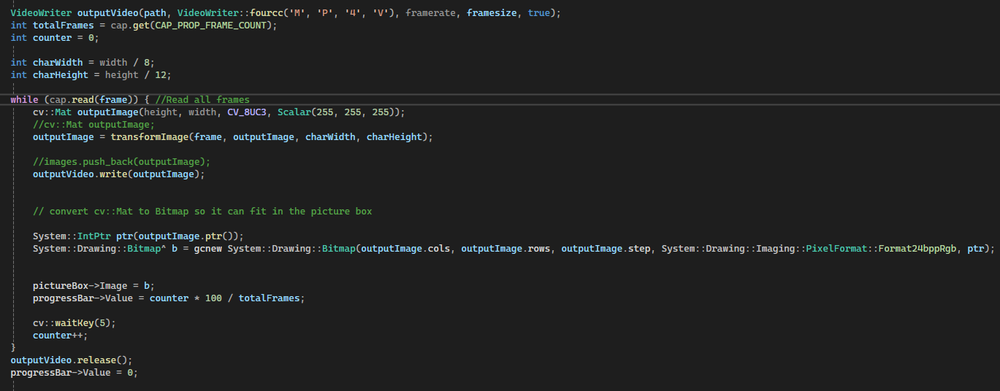
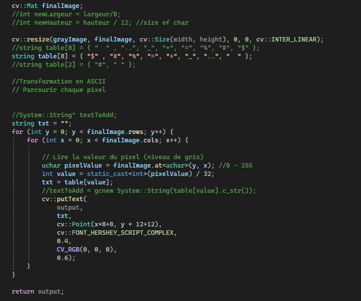
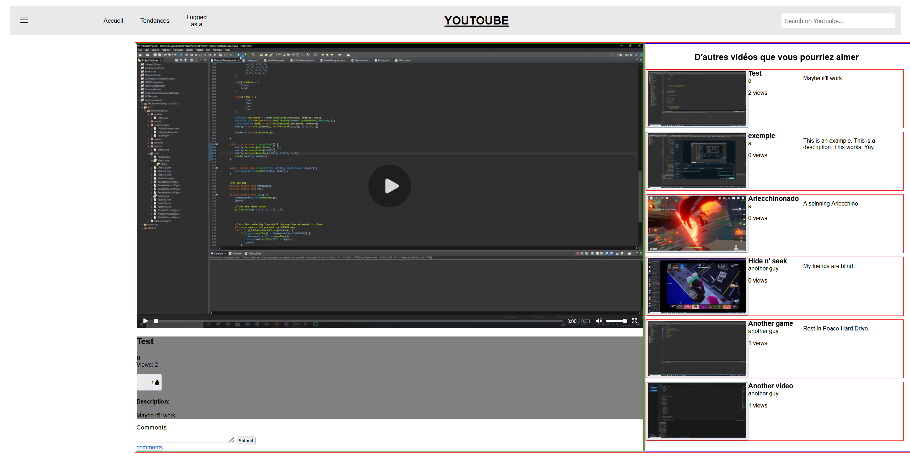
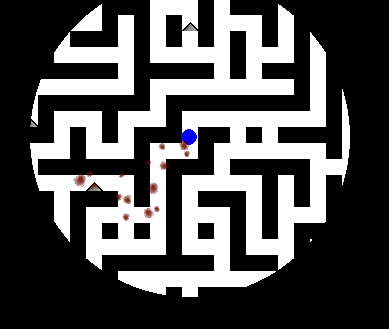

Ce projet est assez ambitieux dans le sens où il est nécessaire d'avoir de nombreux modes de jeu disponibles pour le considérer comme terminé.
Le Meltdown est aujourd'hui le seul mode de jeu qui peut être considéré comme complètement terminé et c'est donc sur ce mode en particulier que cette présentation va détailler.
Les jeux ont été imaginés pour être joué à 8 équipes de 4 joueurs. Par leurs performances individuelles et collective, les joueurs gagnent des Coins. Ces Coins sont liés à leur profile et sert à avoir un classement personnel.
L'équipe rassemble la somme des Coins de chacun de ses membres, de cette façon on peut les classer.
Le Meltdown est basé sur la coopération entre les joueurs d'une équipe. En effet, une équipe est éliminée seulement si tous ses joueurs sont congelés. De plus, la pioche servant à récupérer les blocs de Coins ne peuvent être utilisés que par un
joueur de l'équipe à la fois. Il est donc primordiale de s'organiser afin de pouvoir obtenir le plus d'or possible en éliminant les équipes adverse.
Le meltdown est organisé en salles, qui s'ouvrent au fur et à mesure que le temps passe.
Les salles aux extrêmités sont les points d'apparition des équipes. Elles ont directement accès à la salle devant elles. Les salles d'ouvrent au fur et à mesure, se rapprochant du centre et permettant aux équipes de se rencontrer.
Pour pousser les joueurs à se rendre au centre, les salles vont progressivement "fondre" à partir d'un certain temps de jeu, d'où le nom "Meltdown". Des alarmes s'activent dans ces salles 1 minute avant qu'elles ne commencent à fondre,
avec un signal sonore (le tout grace au pack de texture).
Quand un joueur ennemi touche un membre de l'équipe avec un Freezing Gun, celui ci se transforme en glace. Il est désormais en mode "spectateur", où il est forcé d'avir le point de vue d'un de ses coéquipier (La caméra libre est empêchée par le plugin).
Si un membre de son équipe place un Heater, il va progressivement décongeler jusqu'à être libéré, le joueur retrouve alors le contrôle de son personnage.
(Note: les noms des joueurs sont censurés car ils contenaient mon prénom.)
Quand il ne reste plus qu'une équipe les Coins gagnés durant la partie sont attribués et les joueurs téléportés au Lobby.
HTML Interpreteur
Ce projet consiste à prendre du code HTML et à l'afficher, en respectant les balises et les propriétés CSS.
La page HTML passe d'abord dans un Parser, qui la découpe en tokens. Il y a 8 tokens de HTML:
OPENING_TAG: une balise ouvrante (<)
CLOING_TAG: une balise fermante (
CLOSE_TAG: fin d'une balise ouvrante (>)
SELF_CLOSING_TAG: une balise auto-fermante
TEXT: contenu des balises
RAW_CONTENT: Contenu entre les balises script et style
OPENING_TAG: une balise ouvrante
EOF: fin du document
Voici un extrait du Lexer:
Le Parser va ensuite transformer ces tokens en un arbre de syntaxe abstraite. Ce dernier est ensuite interprété par le Renderer, qui va l'executer. Le resultat sera affiché sur la page.
Video To ASCII
Ce projet est relativement simple, les difficultés principales que j'ai rencontré sont en rapport avec C++ que je n'utilise pas couramment, les libraires externes et le déploiment.
La conversion de vidéo en vidéo ascii est simple:
On décrète qu'un pixel fait 8*12 pixels.
On divise donc la resolution de la video par 8 et 12.
On transforme l'image en niveau de gris et selon ce niveau on imprime un caractère sur une image blanche.
Toutes ces images mises à la suite permettent de faire une video ascii.


Cette démarche présente un problème: il n'y a pas de son.
Pour résoudre ce problème il faudrait utiliser une librairie comme FFMpeg.
Je rencontre en ce moment un problème avec ce projet: le bouton de conversion ne fonctionne plus.
Si je devais refaire ce problème j'utiliserai Java car j'ai plus d'expérience avec ce langage même si cela risque de prendre plus de temps pour traiter une vidéo.
Je reprendrai sûrement ce projet un jour pour le passer sous Java, la libraire FFMpeg est disponible aussi dans ce langage.
Your Own Legend
Your Own Legend est mon premier essai de jeu en 3D. C'est un jeu de type Voxel, les cubes sont générés par "Chunk" de 16 blocs par 16 blocs.
Le joueur est représenté par une caméra qui a une position et une rotattion. A chaque rafraichissement, cette position et rotation sont mises à jour.
Quand j'ai implémenté cette caméra mon taux de rafraichissement était cappé à 165Hz, la vitesse que j'ai choisi pour le joueur est donc adaptée à ce tauc de rafraichissement.
Or, ce taux de rafraichissement peut varier d'un ordinateur à l'autre et même ne pas être stable. La vitesse pourrait donc varier en fonction de la configuration de l'ordinateur.
Pour éviter cela, il suffit de définir la distance parcourue en 1 frame par vitesse / taux de rafraichissement.
Voici un apreçu de la caméra:
Maintenant que nous avons une caméra il nous faut un monde.
La render distance ou distance de rendu est la distance maximale auquel le joueur peut voir. Passé cette distance, le monde ne se génère plus.
Quand le joueur s'approche suffisamment d'un chunk pour le faire entrer dans la zone de rendu, un Thread vérifie si ce chunk a précédemment été initialisé, et, si non, le génère et le stock.
Le Thread chargé du récupère tous les chunks générés qui se situent dans le rayon de la distance de rendu et les affiche.
L'affichage est géré par OpenGL, qui récupère les coordonnées des sommets du cube, sa texture et après la multiplication des coordonnées des sommets par la view matrix, projection matrix et transformation matrix affiche le résultat à l'écran.
Le generator créer une heightmap suivant l'algorithme du bruit de Perlin.
Une fois la position et la rotation de la caméra calculée, les chunks devant être affichés générés et chargés ils sont maintenant affichés.
Ci après vous pouvez retrouver une démonstration du jeu dans son état actuel.
Youtoube
Il s'agit du premier projet en groupe de NSI. Nous avons fait une copie assez simple du site youtube à l'aide de Flask.
Notre site est divisé en plusieurs pages: les pages d'accueil, tendances et recherche qui affiche une liste de vidéos,les pages liées à l'utilisateur, où il peut voir ses informations, ses vidéos, son historique
et finalement la page d'affichage des vidéos qui permet de les lires, de les "aimer" et de poster un commentaire.
Les pages d'accueil / recherche
Ces pages énumèrent les vidéos de la base de données. La page principale liste toutes les vidéos sans logique particulière, la page "tendances" les trie en fonction de leur nombre de vues, et la page recherche les tries selon le titre ou le créateur.
Voici ensuite les pages liées à l'utilisateur.
Pour y accèder, comme pour accèder à beaucoup d'autres contenu il est nécessaiere de se connecter à son compte (pour accèder à l'espace utilisateur mais aussi pour aimer ou commenter une vidéo).
Quand un utilisateur essaie d'accèder à une page qui necessite la connexion à un compte alors qu'il n'est pas connecté, un popup de connexion apparait.
Dans certains cas (mot de passe incorrect, clic sur le bouton "aimer") l'utilisateur sera redirigé vers la page de connexion elle-même (en l'occurence http://127.0.0.1:5000/login). Une fois la connexion effectuée,
il sera redirigé sur la page où il se trouvait précédemment: s'il regardait la vidéo "Test" et qu'il tente de la commenter sans être connecté, après s'être connecté il sera redirigé vers cette même vidéo.
Les pages de profil sont accessibles depuis la barre de navigation ouvrable avec le bouton "
".
Menu déroulant du profil:
Si l'utilisateur n'est pas connecté, cela affiche simplement "Se connecter", s'il est connecté, les différentes pages sont accessibles.
Page de profil:
Les vidéos postés par l'utilisateurs:
L'historique de l'utilisateur (trié par date, le plus récent en haut):
Toutes les vidéos vues jusqu'à présent sont en réalité des boutons cliquables qui redirigent vers la page de la vidéo.
La page de la vidéo est composé de la vidéo elle même et de ses informations comme le titre, le créateur, le nombre de vues, le nombre de 'likes'...
Un formulaire permet d'envoyer des commentaires et un bouton permet d'afficher ceux ci.
Sur le coté droit, la liste des autres vidéo est disponibles.

Ce projet peut être considéré comme terminé. La partie visuel de ce projet n'était pas notée, on peut donc envisager d'améliorer son esthétique. On peut aussi envisager une amélioration sur le stockage des vidéos.
En effet, elles sont pour le moment stockées en qualité source, on peut envisager de les compresser pour limiter leur impact sur le stockage du serveur.
On peut aussi imaginer des améliorations comme l'implémentation d'algorithme de recommendations pour les videos.
A Mazing Game
Il s'agit du deuxième projet, seul cette fois ci, de NSI.
Voici quelques images du jeu:
On peut voir le joueur ainsi que des ennemis rouges, noirs et une potion de soin.

Quand le joueur touche un spike, la texture du spike change et une trainée de sang apparait. Il y a autant de taches de sang par case que le joueur a touché de spike.
Pour diversifier les taches de sang, la taille, la position et la rotation de la texture varie aléatoirement.
Quand le joueur récupère la lampe, son champ de vision augmente pendant une durée déterminée qui varie selon la difficulté.
Il y a une barre qui indique la durée restante la lampe.
En cas de victoire ou de défaite, le filtre noir disparait, le chemin qu'a emprunté le joueur s'affiche et on peut voir l'emplacement des objets et ennemis:
Comme vu plus haut, le comportement des ennemis rouge (mode normal) est assez complexe.
Tout d'abord savoir si l'ennemi est situé sur une trainée de sang, s'il n'y a pas de trainée de sang sur la carte, il va se diriger directement sur le joueur.
S'il y a une trainée de sang et qu'il n'est pas dessus, il va se dirigée vers la case de la trainée la plus proche de lui.
S'il y a une trainée de sang et qu'il est dessus, si le joueur est lui aussi dessus, il va le suivre, sinon il se déplace aléatoirement. L'algorithme utilisé pour chercher le chemin le plus court est le A*.
Les ennemis noirs eux suivent simplement le chemin le plus court vers le joueur (A*).
Les ennemis jaunes du mode Hunter sont les ennemis au comportement les plus complexes.
les ennemis jaunes doivent fuir le joueur. Voici l'approche que j'ai utilisé:
En situation classique ('panic mode' désactivé), l'ennemi cherche d'abord le point le plus loin du joueur (parcourt en largeur mais on retient le dernier point traité).
Ensuite l'ennemi cherche le point le plus proche du joueur (A*).
Pour déterminer le chemin à prendre, un algorithme A* modifié est appliqué, il prend en compte le point visé (le plus loin du joueur) tout en essayant d'éviter les cases situées dans le chemin le plus court pour aller au joueur.
Ce jeu complètait les objectifs du devoir, néanmoins il me reste un mode à implémenter pour le considérer comme fini.